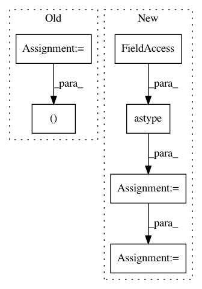

b74a09166cc3adb79a4d61f7937842cb9556e660,chainercv/links/model/faster_rcnn/faster_rcnn.py,FasterRCNN,__call__,#FasterRCNN#Any#Any#Any#,114
Before Change
img_size = x.shape[2:][::-1]
h = self.extractor(x, test=test)
rpn_locs, rpn_scores, rois, roi_indices, anchor =\
self.rpn(h, img_size, scale, test=test)
roi_cls_locs, roi_scores = self.head(
h, rois, roi_indices, test=test)
After Change
and the range of their value is :math:`[0, 255]`.
Returns:
tuple of lists:
This method returns a tuple of three lists,
:obj:`(bboxes, labels, scores)`.
* **bboxes**: A list of float arrays of shape :math:`(R, 4)`, \
where :math:`R` is the number of bounding boxes in a image. \
Each bouding box is organized by \
:obj:`(x_min, y_min, x_max, y_max)` \
in the second axis.
In pattern: SUPERPATTERN
Frequency: 4
Non-data size: 6
Instances
Project Name: chainer/chainercv
Commit Name: b74a09166cc3adb79a4d61f7937842cb9556e660
Time: 2017-06-04
Author: Hakuyume@users.noreply.github.com
File Name: chainercv/links/model/faster_rcnn/faster_rcnn.py
Class Name: FasterRCNN
Method Name: __call__
Project Name: dmlc/gluon-nlp
Commit Name: 1f9ad444b5dee8b2562b7bfa1cf9f576fa32a347
Time: 2020-07-31
Author: 37728728+ZheyuYe@users.noreply.github.com
File Name: src/gluonnlp/op.py
Class Name:
Method Name: updated_vectors_by_position
Project Name: chainer/chainercv
Commit Name: 8d4bae398068c94d616b244f6354f70f7d12e42d
Time: 2017-10-04
Author: yuyuniitani@gmail.com
File Name: chainercv/datasets/cub/cub_keypoint_dataset.py
Class Name: CUBKeypointDataset
Method Name: get_example
Project Name: dmlc/gluon-cv
Commit Name: b30cdf3a1a977927345f407a4c25be2884cfee7f
Time: 2018-09-06
Author: 8041160+zhanghang1989@users.noreply.github.com
File Name: scripts/segmentation/train.py
Class Name: Trainer
Method Name: validation